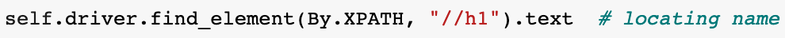

We have all been there, digging through HTML with blood shot eyes, searching for the perfect path to gather all the text you desire. You believe you found success, and then, an error occurs and JavaScript is the cause. For you, Selenium is here to help.
In this blog, we’ll cover:
- The Selenium WebDriver and IDE (for Python).
- How they can be used to simplify your web scraping efforts to overcome common obstacles that Beautiful Soup cannot.
- How to get started with the IDE and utilize its features.
- How to navigate the code, select better element tags, and gather your data.
What is Selenium?
Although Selenium is incredibly helpful with web scraping, this is not its explicit purpose; it’s actually a framework for testing web applications. It accomplishes this through two components, WebDriver and Selenium IDE.
The WebDriver accepts commands via programming code (in a variety of languages) and launches this code in your default web browser. Once the browser is launched, WebDriver will automate the commands, based on the scripted code, and simulate all possible user interactions with the page, including scrolling, clicking, and typing.
The Selenium IDE (integrated development environment) is a browser extension for Firefox and Chrome that allows you to record your interactions with a web page and edit those interactions to further customize your test. Via Selenium’s API, you can actually export the underlying code to a Python script, which can later be used in your Jupyter Notebook or text editor of choice.
How Selenium Helps with Web Scraping
As websites get more complex, simple scraping techniques and libraries (such as Beautiful Soup) might run into the following obstacles:
- Java Script or CSS that obscure or transform the elements.
- Username and password authentication requirements that hide data on a web page fulfilled.
This is where the Selenium IDE shines. As it mimics a user and interacts with the front facing elements of a web page, it can easily identify the necessary Java Script or CSS code and provide the proper path to get you what you need. If a login pop-up box arrives, Selenium IDE can type in your credentials and move the process along.
The IDE can even assist you on your easier scraping tasks, by providing you the tags to any location you click on a page. Notice how tags is plural there? The IDE will give you a list of all possible tags for that link, providing you with multiple angles to attack your web scraping task.
Getting Started with the IDE
Coders of any skill level can get Selenium up and running, by simply starting with the IDE!
To use the IDE, you will need the extension with either Chrome or Firefox.
Once you have the extension, open the IDE and select “Record a new test in a new project.”
Select a base URL for your project, in the next pop-up, and click “start recording.” This will open a new web browser and the IDE, which will track all of your actions. Click, scroll, type, and interact with the webpage in the manner that you choose. Note: it is beneficial that you click on the elements you want to scrape. We will cover this in depth later. When finished, click on the stop button in the IDE, in the upper right hand corner, and you are done.
Selenium IDE Features
When you are finished your output should look something like this:
The elements displayed on the IDE are as follows:
1) Playback and test execution icons. Slowing down the test execution speed can help you identify what some of the commands actually do and also prevent an error from the test execution moving quicker than your browser.
2) The base url you selected for your project. You can change this as you desire. All values used will be stored in the drop down menu.
3) Command list. This specifies the type of action being done in the browser, in order of operation. You will get errors here if the action cannot be done in a certain amount of time. If this happens, try slowing down your test speed.
4) Target list. These are the targets of the command line and many will be the paths that you will use in your scraping. This is incredibly helpful, but we’ll cover this benefit later.
5) Values. These are any input values entered into the browser. In this case, I have entered an e-mail address and a password.
6) Record and pause buttons. These are your buttons you can use to restart your recording and pause, when necessary. When recording is live, Stop replaces the Record button.
7) Add new test button. If you have a separate test (another website or page) that you would like to record, this can be added here.
8) Test edit button. There are basic features here (e.g. rename), but this button is important for one reason, to export the code of the test. When this option is selected, you can simply select the language (Python in our case) and save it to your project folder. When you open the file you get a fully functioning Python script.

Launching the Webdriver
We now have code that, if run, will open a browser and execute the commands you laid out in the IDE. In this section, we’ll cover how to use the IDE code output, making adjustments with the help of the IDE, to scrape the data that you want.
A major component here, something that most blogs and tutorials on Selenium will address, is the WebDriver (pictured here). This is the engine that makes this work. The WebDriver, if you’re writing this code from scratch, must be imported and assigned with your browser of choice.
Selecting Targets: How to Find Better Tags
Earlier, I mentioned that it is beneficial to click on the elements that you want to scrape. If done, you will now be able to leverage another section of the IDE to identify various paths to locate the link or text you desire.
Notice the first Target provided by the IDE. If I wanted to loop through a series of links, the ‘linkText’ option would present some challenges. However, using the paths attached to CSS or XPath, we can easily locate numbers to be looped through, in this case allowing me to loop through different web pages.
For virtually all the Targets in the IDE, you will have the ability to make adjustments or find the proper tag to apply to your code.
Navigating Your Code
As you read over the generated code, you will notice several different methods. These methods serve varying purposes and may sometimes need to be adjusted for your scraping purposes. Some of these methods are:
- .click — it does what it says. Attach this at the end of any element you want selected or clicked.
- .get — a simple ‘get request’ that will use the WebDriver to call the assigned web page.
- .find_element — an instruction to find a specified element in a path, similar to ‘find’ in Beautiful Soup. All possible elements are posted below.
- .find_elements — an instruction to find all the elements that end in the specified path. This is similar to ‘find_all’ in Beautiful Soup.
- .move_to_element — an attribute of the ActionChains class. This is often used to manipulate the mouse for a certain action, e.g. to engage a drop down menu.
- .execute_script — used to execute JavaScript in a browser. This can handle tasks as simple as scrolling in the window.
Gathering the Data
All of these methods assist you in navigating your page, but you came here for data. All you need is a simple attribute call appended to the end of your code:
- .text — add this to the end of an element and the data will be yours.

One important thing to consider here, though, ‘.find_elements’ (plural) will provide a list of elements, so merely adding ‘.text’ to the end of your element will be unsuccessful. Like any other Python object, simple list comprehension will address this issue.
Final Notes
Selenium is a handy tool to have in your collection to assist in your web scraping needs, but due to its utilization of the web browser, it can be too cumbersome for simple tasks that can be scraped in seconds. As difficult projects go, though, it is an easy package to deploy in the face of challenging JavaScript and CSS code.
The Selenium IDE allows you to easily inspect elements of a web page by tracking your interaction with the browser and providing alternate options you can use in your scraping. It also provides the opportunity to easily mimic the login experience, which can overcome authentication issues with certain websites. Finally, the export feature provides a quick and easy way to deploy your code in any script or notebook you choose.
This is just a brief overview of the capabilities of Selenium. The documentation, found here, provides many other great features that can be employed in your scraping (like saving screenshots).